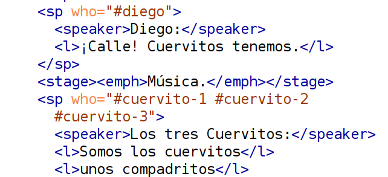

Zarzuela, Sainete, Entremés: das komische Musiktheater in der digitalen Gattungsanalyse
Ulrike Henny-Krahmer (Universität Rostock)
Keynote zur Eröffnung der Edirom Summer School 2025, Universität Paderborn, 8. September 2025.
Präsentation: https://hennyu.github.io/edirom_25/

Überblick
- Zarzuela, Sainete, Entremés: das komische Musiktheater in hispanischer Tradition
- ArDraCor: Zum Aufbau eines digitalen argentinischen Dramenkorpus
- De paseo en Buenos Aires: Ansätze für die digitale Gattungsanalyse
Zarzuela, Sainete, Entremés: das komische Musiktheater in hispanischer Tradition
Zarzuela, Sainete, Entremés: das komische Musiktheater in hispanischer Tradition
|
Spanien und spanischsprachige Welt: lange Tradition verschiedener dramatischer Untergattungen mit Musik |
Das komische Musiktheater in hispanischer Tradition
- Entremés:
frz. entremets - Zwischengericht; kurzer, realistischer oder satirischer Einakter, oft mit Tanz, 16./17. Jh. - Sainete:
sp. Leckerbissen, löste Ende des 17. Jhs. den Entremés ab, mit Musik/Tanzeinlagen, Zwischen-/Nachspiel, dann selbständiges Volksstück, heiter/kritisch - Zarzuela:
Zarzuelapalast Madrid, Wechsel Gesang/Dialog, Übernahmen ital. Oper, schon im 17. Jh., dann wieder im 19. Jh.
Zur Gattungsproblematik
Was vereint Zarzuela, Sainete, Entremés, was trennt sie?
- klare Abgrenzung verschiedener Untergattungen nicht einfach
- Vielfalt an Bezeichnungen in historischen Untertiteln
- Vorschlag: Zarzuela als Sammelbegriff
- doch durchaus Unterformen erkennbar (z.B. große/kleine)
(vgl. dazu von Schmädel und Mühlschlegel 2016)
Zur Verfügbarkeit der Quellen
|
ArDraCor: Zum Aufbau eines digitalen argentinischen Dramenkorpus
ArDraCor: Ausgangspunkt und Ziele
|

(erstellt mit deepai.org) |
Warum überhaupt digitale Dramenkorpora?
|
(Netzwerkgraphen zu 465 Stücken in chronologischer Reihenfolge - Trilcke und Fischer 2018) |
Computational Literary Studies (CLS) bieten die Möglichkeit,
literaturgeschichtliche Fragen auf neue Weise zu untersuchen, z. B.: ... groß angelegte Studien zu Epochen, Strömungen, Wandel... ... neue Blickwinkel auf Strukturen und Textstil (von Autor:innen, Gattungen, ...) ... komparativ angelegte Untersuchungen (verschiedene Kulturräume/Sprachen) |
Was ist DraCor?

Noch einmal: Was ist DraCor?
- 'DraCor is not primarily a website. DraCor is a showcase for the concept of Programmable Corpora.'
- 'DraCor aims to create an interface between traditional and digital literary studies'
Was soll ArDraCor umfassen?
- möglichst viele argentinische Dramentexte vom späten 18. bis zum frühen 20. Jahrhundert
- grundlegende Metadaten zu jedem Drama (Autor:in, Titel, Gattung, Daten, Quellen)
- den digitalen Volltext jedes Dramas
- strukturelles Markup für jedes Drama (Figuren, Akte, Szenen, Rede, Bühnenanweisungen)
Was ist interessant an ArDraCor?
|
(erstellt mit deepai.org) |
Wer arbeitet an ArDraCor?
|
|


Workflow
- Recherche
- Organisation
- Digitalisierung
- Textkonstitution
- Strukturierung
- Publikation
Einige Quellen
| Biblioteca Digital Argentina | |
| Biblioteca Virtual Miguel de Cervantes | |
| Wikimedia Commons: Sammlung der Argentinischen Akademie | |
| Digitale Sammlungen des Ibero-Amerikanischen Instituts (IAI) | |
| Seibel, Beatriz: Antología de obras de teatro argentino: desde sus orígenes a la actualidad, Buenos Aires: Instituto Nacional del Teatro, 2006-2017. |
Spin-Off: Online-Datenbank TeatrAr
Aktueller Arbeitsstand von ArDraCor
- Online-Datenbank TeatrAr mit Metadaten zu relevanten Werken (ca. 200): https://hdlab.space/teatrar/
- Laufende Arbeiten auf GitHub: https://github.com/dracor-org/ardracor/
- Staging: 8 Texte, die für die Veröffentlichung in DraCor vorbereitet wurden: https://staging.dracor.org/ar
TEI-Beispiel aus ArDraCor
De paseo en Buenos Aires: Ansätze für die digitale Gattungsanalyse
De paseo en Buenos Aires
|
De paseo en Buenos Aires
Der Autor über das Stück im Prolog, 1889, S. 7:
Dieser Glaube hat mich dazu angeregt, in vier Strichen den Entwurf zu skizzieren, den ich heute der Öffentlichkeit vorstelle. Damit dieses Werk ein echtes argentinisches Werk ist, habe ich es in Bildern und Bräuchen unseres täglichen Lebens entwickelt, wobei ich nicht nach Poesie, sondern nach Realität gesucht habe, die meiner Meinung nach den wahren Wert der Szene und das Geheimnis der aufrichtigen Verbindung zwischen Autor und Publikum ausmacht.
De paseo en Buenos Aires
Der Autor über das Stück im Prolog, 1889, S. 8:
Ich möchte lediglich einen Versuch zugunsten des lokalen Theaters starten, und wenn ich diesen Charakter noch nicht stärker betont habe, dann liegt das an dem unüberwindbaren Hindernis des Mangels an Künstlern, die mit der unverzichtbaren Genauigkeit typisch argentinische Charaktere verkörpern könnten.
De paseo en Buenos Aires: Cuadros
De paseo en Buenos Aires: Personajes
De paseo en Buenos Aires: Einleitung
De paseo en Buenos Aires: Netzwerk
De paseo en Buenos Aires: Netzwerk Verkauf
De paseo en Buenos Aires: Netzwerk Markt
Figurennetzwerke ArDraCor
Loa de Santa Fe en honor a Felipe V (1717) |
Siripo. Tragedia en verso (1789) |
A río revuelto ganancia de pescadores. Sainete en un acto (1816) |
Diálogo patriótico interesante (1821) |
Argia. Tragedia en cinco actos (1824) |
Similia Similibus. Proverbio en un acto (1883) |
De paseo en Buenos Aires. Bosquejo local en dos actos y diez cuadros (1889) |
Marco Severi. Drama en tres actos (1905) |
Gesungene und gesprochene Verse in der Zarzuela
Gesungene und gesprochene Verse in der Zarzuela
|  |
Gesungene und gesprochene Verse in der Zarzuela
| //div[@type="scene"]/stage[contains(., "Música")]/following-sibling::sp[not(preceding-sibling::stage[contains(.,"Hablado")])]/l |
Weitere Ansätze der digitalen Gattungsstilistik
- Untersuchungen des Volltextes der Dramen, z.B. mit Blick auf den Sprachstil oder Themen
- möglich für ganze Stücke (Gattungsvergleich)
- aber auch für die Rede bestimmter Figuren
- oder für Stil und Themen im Textverlauf eines Stücks (z.B. Akte)
Fazit
Fazit
- Musiktheater in spanischer Tradition: interessante Gattungsgeschichte, vielfältige Möglichkeiten literatur- und musikgeschichtlicher Fragestellungen
- Digitale Gattungsstilistik: bietet bereits etablierte und neue Analysemethoden
- Jedoch: Aufwand für Korpuserstellung in TEI
- Allerdings: mit jedem weiteren codierten Stück größerer Fundus
- Dennoch: weitere Methoden wichtig für ganzheitliche Analysen
Literaturhinweise
- Fischer, Frank, et al. (2019): Programmable Corpora: Introducing DraCor, an Infrastructure for the Research on European Drama. In: Proceedings of DH2019: "Complexities", Utrecht University, DOI: 10.5281/zenodo.4284002.
- McCleary, Kristen (2018): Popular Theater in Buenos Aires: The Madrid of South America? In: The Metropole. The Official Blog of the Urban History Association. https://themetropole.blog/2018/05/16/popular-theater-in-buenos-aires-the-madrid-of-south-america/
- Mühlschlegel, Ulrike (2017): Zarzuela: Spanisches Musiktheater - ein Projekt am Ibero-Amerikanischen Institut. Archiv für Textmusikforschung 2: 1-2. https://www.atem-journal.com/ATeM/article/view/2017.21/2016
- Pasquariello, Anthony M. (1983): The Evolution of the sainete in the River Plate Area. Latin American Theatre Review 17 (1): 15–24. https://journals.ku.edu/latr/article/view/536.
- von Schmädel, Stephanie und Ulrike Mühlschlegel (Hrsg.) (2016): Zarzuela: Spanisches Musiktheater. El mundo comedia es - Die Welt ist eine Bühne. Berlin: Ibero-Amerikanisches Institut. https://www.iai.spk-berlin.de/fileadmin/2_Dokumentenbibliothek/Publikationen/Ausstellungskataloge/Katalog_Zarzuela_Web.pdf
- Seibel, Beatriz, Hrsg. (2006-2017). Antología de obras de teatro argentino: desde sus orígenes a la actualidad. Buenos Aires: Instituto Nacional del Teatro.
- Trilcke, Peer und Frank Fischer (2018): Literaturwissenschaft als Hackathon. Zur Praxeologie der Digital Literary Studies und ihren epistemischen Dingen. In: Wie Digitalität die Geisteswissenschaften verändert: Neue Forschungsgegenstände und Methoden. Hg. von Martin Huber / Sybille Krämer. (= Sonderband der Zeitschrift für digitale Geisteswissenschaften, 3). text/html Format. DOI: 10.17175/sb003_003
Vielen Dank für die Aufmerksamkeit!
Präsentation:
https://hennyu.github.io/edirom_25/